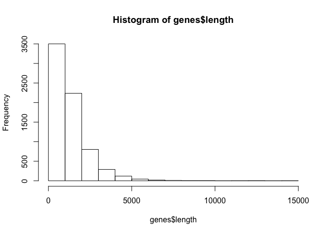
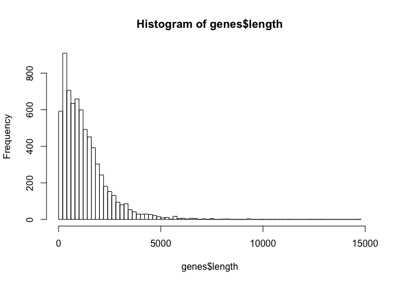
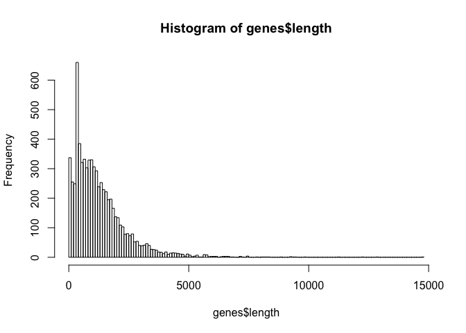

Page d'accueil d'EnsemblGenomes

Jacques van Helden
2019-01-16
Durant ce TP, vous serez amenés à effectuer les tâches suivantes:
Le format GTF (General Transfer Format) est très largement utilisé pour fournir des annotations génomiques dans un format facilement lisible, tout en étant facilement manipulable au moyen de l'ordinateur.
Fichiers textuels,
Le format est décrit sur les sites suivants.
N'hésitez pas à adapter le protocole ci-dessous pour travailler avec votre propre génome.
Sous Linux et Mac OS X, on peut identifier la racine de son compte avec la commande R Sys.getenv().
Invoquée sans paramètre, cette commande liste toutes les variables d'environnement (votre configuration système).
On peut restreindre l'output à une variable d'environnement donnée, par exemple Sys.getenv("HOME") retourne le chemin de la racine de votre compte.
Une écriture équivalente : le symbole tilde ~ indique également le chemin de la rachine de votre compte.
La notation '~' fonctionne également sous Windows, nous l'utiliserons donc ci-dessous.
Exercice: créer un dossier de travail nommé workDir à la racine de votre compte, et déplacez-vous dans ce dossier.
Solution ci-dessous.
## Define the working directory
workDir <- "~/intro_R/explorer_un_GTF"
## Create the working directory
dir.create(workDir, recursive = TRUE, showWarnings = FALSE)
## Go to the working directory
setwd(workDir)
getwd() ## Check your current location[1] "/Users/jvanheld/intro_R/explorer_un_GTF"list.files() ## List files (should be empty if just created)[1] "Saccharomyces_cerevisiae.R64-1-1.41_chrom_sizes.tsv"
[2] "Saccharomyces_cerevisiae.R64-1-1.41.gtf.gz" Exercise: download the GTF file in the working directory (optionally, adapt the command to load a GTF of your interest). Before downloading the file we check if it is already present in the rowking directory. If yes, we skip the download.
**Tip:** use the commands file.exists, download.file.
## Define the file name (without path) in a separate variable, we will need it later
gtf.file <- 'Saccharomyces_cerevisiae.R64-1-1.41.gtf.gz'
## Define the URL by concatenating the URL of the directory and the file name
gtf.url <- file.path('ftp://ftp.ensemblgenomes.org/pub/release-41/fungi/gtf/saccharomyces_cerevisiae/', gtf.file)
## Download the file, but only if not yet there
if (file.exists(gtf.file)) {
message("GTF annotation file already there: ", gtf.file)
} else {
message("Downloading GTF annotation file")
download.file(url = gtf.url, destfile = gtf.file)
}
## Check the files in the work directory
list.files()[1] "data"
[2] "figures"
[3] "gtf_exploration_files"
[4] "gtf_exploration.html"
[5] "gtf_exploration.md"
[6] "gtf_exploration.pdf"
[7] "gtf_exploration.Rmd"
[8] "images"
[9] "Saccharomyces_cerevisiae.R64-1-1.41.gtf.gz"Commands: read.table, read.delim, read.cvs.
R includes several types of tabular structures (matrix, data.frame, table). The most widely used is data.frame(), which consists in a table of values with a type (strings, integer, ..) attached to each column, and names associated to rows and columns.
The function read.table() enables to read a text file containing tabular data, and to store its content in a variable.
Several finctions derived from read.table() facilitate the loading of different formats.
read.delim() for files where a particular charcater is used as column separator (by default the tab character "").
read.csv() for "comma-searated values" values.
Load the GTF file in a variable named featureTable.
**Tip:** command read.delim.
## Load GTF file in a data.frame
featureTable <- read.delim(
gtf.file, comment.char = "#", sep="\t",
header=FALSE, row.names = NULL)
## The GTF format has no header, but we can define it based on the specification
names(featureTable) <- c("seqname", "source", "feature", "start", "end", "score", "strand", "frame", "attribute")Immediately after having loaded a data table, check its dimensions.
dim(featureTable) ## Dimensions of the tbale[1] 41606 9nrow(featureTable) ## Number of rows[1] 41606ncol(featureTable) ## Number of columns[1] 9Displaying the full annotation table would not be very convenient, since it contains tens of thousands of rows.
We can display the first rows of the file with the function head(), and the last rows with tail().
## Display the 5 first rows of the feature table
head(featureTable, n = 5)
## Display the 5 last rows of the feature table
tail(featureTable, n = 5) If you are using the RStudio environment, you can display the table in a dynamic viewer pane with the function View().
## In RStudio, display the table in a separate tab
View(featureTable) The View() function is interactive, so it should not be used in a script because it would perturbate its execution.
The last column of GTF files is particularly heavy, it contains a lot of semi-structured information.
We can select the 8 first columns and display the 5 first rows of this sub-table.
## Column selection + head
head(featureTable[,1:8], n = 5) seqname source feature start end score strand frame
1 IV sgd gene 1802 2953 . + .
2 IV sgd transcript 1802 2953 . + .
3 IV sgd exon 1802 2953 . + .
4 IV sgd CDS 1802 2950 . + 0
5 IV sgd start_codon 1802 1804 . + 0## Equivalent: selecting subsets of rows and columns
featureTable[1:5, 1:8] seqname source feature start end score strand frame
1 IV sgd gene 1802 2953 . + .
2 IV sgd transcript 1802 2953 . + .
3 IV sgd exon 1802 2953 . + .
4 IV sgd CDS 1802 2950 . + 0
5 IV sgd start_codon 1802 1804 . + 0Exercise: the column feature of the GTF indicates the feature table.
Tip: commands unique(), table() and sort().
## List the types of features
unique(featureTable$feature)[1] gene transcript exon CDS
[5] start_codon stop_codon five_prime_utr
7 Levels: CDS exon five_prime_utr gene start_codon ... transcript## Count the number of features per type
sort(table(featureTable$feature), decreasing = TRUE)
exon gene transcript CDS start_codon
7416 7036 7036 6913 6601
stop_codon five_prime_utr
6600 4 La fonction table() permet de compter le nombre d'occurrences de chaque valeur dans un vecteur ou un tableau. Quelques exemples d'utilisation ci-dessous.
## Count the number of featues per chromosome
table(featureTable$seqname)
I II III IV IX Mito V VI VII VIII X XI XII XIII XIV
731 2841 1170 5185 1520 312 2055 898 3688 2012 2511 2180 3690 3196 2712
XV XVI
3706 3199 ## Count the number of features per type
table(featureTable$feature)
CDS exon five_prime_utr gene start_codon
6913 7416 4 7036 6601
stop_codon transcript
6600 7036 On peut calculer des tables de contingence en comptant le nombre de combinaisons entre 2 vecteurs (ou 2 colonnes d'un tableau).
## Table with two vectors
table(featureTable$seqname, featureTable$feature)
CDS exon five_prime_utr gene start_codon stop_codon transcript
I 120 129 0 124 117 117 124
II 483 500 0 472 458 456 472
III 192 210 0 200 184 184 200
IV 870 907 0 868 836 836 868
IX 252 269 1 258 241 241 258
Mito 59 87 0 55 28 28 55
V 338 367 0 352 323 323 352
VI 146 166 0 154 139 139 154
VII 605 659 0 629 583 583 629
VIII 340 358 0 336 321 321 336
X 412 446 1 428 398 398 428
XI 361 385 0 369 348 348 369
XII 604 668 0 631 578 578 631
XIII 531 573 1 541 504 505 541
XIV 454 478 0 455 435 435 455
XV 609 647 1 628 596 597 628
XVI 537 567 0 536 512 511 536## Same result with a 2-column data frame
table(featureTable[, c("seqname", "feature")]) feature
seqname CDS exon five_prime_utr gene start_codon stop_codon transcript
I 120 129 0 124 117 117 124
II 483 500 0 472 458 456 472
III 192 210 0 200 184 184 200
IV 870 907 0 868 836 836 868
IX 252 269 1 258 241 241 258
Mito 59 87 0 55 28 28 55
V 338 367 0 352 323 323 352
VI 146 166 0 154 139 139 154
VII 605 659 0 629 583 583 629
VIII 340 358 0 336 321 321 336
X 412 446 1 428 398 398 428
XI 361 385 0 369 348 348 369
XII 604 668 0 631 578 578 631
XIII 531 573 1 541 504 505 541
XIV 454 478 0 455 435 435 455
XV 609 647 1 628 596 597 628
XVI 537 567 0 536 512 511 536Note about feature length computation (explain why) :
\[L = \text{end} - \text{start} + 1\]
## Add a column to the table with genes lengths
featureTable$length <- featureTable$end - featureTable$start + 1The function subset() enables to select a subset of rows based on a filter applied to the content of one or several columns.
We can use it to select the subset of features corresponding to genes.
genes.Tip: commands subset, summary.
## Select subset of features having "CDS" as "feature" attribute
genes <- subset(featureTable, feature == "gene")
## Print a message with the number of genes
message("Number of genes: ", nrow(genes))
## Compute basic statistics on genes lengths
summary(genes$length) Min. 1st Qu. Median Mean 3rd Qu. Max.
51 468 1005 1275 1717 14733 ## Download tab-delimited file with chromosome sizes (unless already there)
chromsizes.url <- "http://jvanheld.github.io/stats_avec_RStudio_EBA/practicals/gtf_exploration/data/Saccharomyces_cerevisiae.R64-1-1.41_chrom_sizes.tsv"
chrom.size.file <- file.path(workDir, "Saccharomyces_cerevisiae.R64-1-1.41_chrom_sizes.tsv")
if (file.exists(chrom.size.file)) {
message("Chromosome size file already there, not downloaded\n\t", chrom.size.file)
} else {
download.file(chromsizes.url, destfile = chrom.size.file, method = "curl")
}## Read chromosome sizes
chrom.size <- read.delim(
file = chrom.size.file,
header = FALSE, row.names = 1)
## Assign a name to the columns
names(chrom.size) <- c("chromID", "size")
# View(chrom.size)
## print the size of hte third chromosome
message("Length of chromosome III = ", chrom.size["III", "size"], " bp.")Draw an histogram with gene length distribution. Choose a relevan number of breaks to display an informative histogram.
Draw a barplot showing gene density per chromosome (number of genes per Mb).
Draw a boxplot of gene lengths per chromosome.
hist(genes$length)
## Take more or less 100 bins
h <- hist(genes$length, breaks = 100)
Distribution of cds lengths for Saccharomyces cerevisiae.
Récupérez le résultat de hist() dans une variable nommée {histData}.
## Define breaks exactly in the way you wish
histData <- hist(genes$length, breaks=seq(from=0, to=max(genes$length)+100, by=100))
Imprimez le résultat à l'écran (print()) et analysez la structure de la variable histData (il s'agit d'une variable de type liste).
Fonctions utiles:
class(histData)attributes(histData)print(histData)## Display the values used to draw the histogram
print(histData )D'autres types de graphiques permettent d'explorer la distribution d'un ensemble des données. En particulier, les boîtes à moustaches (box plots) affichent, pour une série de données, la médiane, l'écart interquartile, un intervalle de confiance et les valeurs aberrantes.
boxplot(length ~ seqname,
data = genes,
col = "palegreen",
horizontal = TRUE,
las = 1,
xlab = "Gene length",
ylab = "Chromosome")Boxplot of gene lengths per chromosome